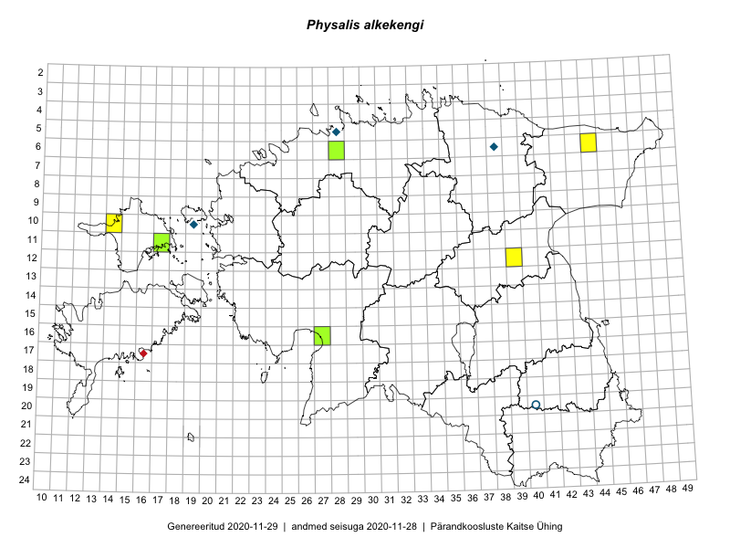

Physalis alkekengi
Uuendatud: 2016-12-02
Kaardile koondatud taksonid: Physalis alkekengi L.

Kaart põhineb 4 kirjel, neist vaatlusi 3 ja eksemplare 1. Taksonit on leitud 4 ruudust.
Viited andmebaasikirjetele